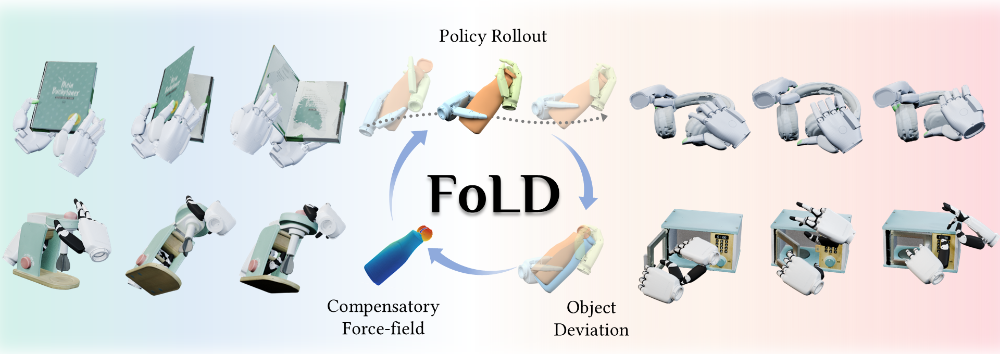
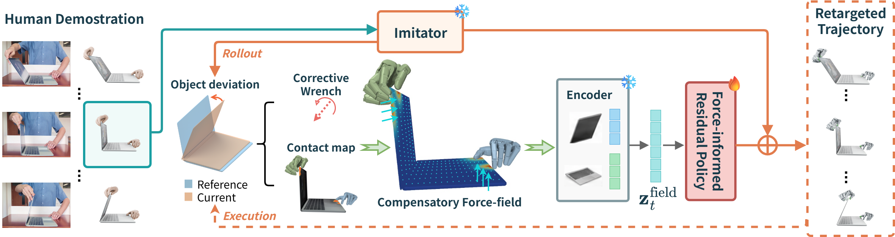

01
Initial imitation
Retarget the human motion to a robot hand while the object is driven along the ground-truth physical trajectory (GT object trajectory). Even with this GT motion, the resulting hand–object contact can remain imprecise.
Force-informed robot learning

Force-Informed Learning for Dexterous Articulated Object Manipulation turns object-motion deviations into compensatory force guidance, enabling diverse robotic hands to refine retargeted motions into physically effective interactions.
Overview
From human demonstration and kinematic retargeting to compensatory force guidance, simulation learning, and real-robot deployment.
Abstract
Transferring human demonstrations to dexterous robots remains challenging because differences in hand morphology and contact dynamics often cause retargeted motions to fail at producing the intended object behavior. We present FoLD, a framework for learning dexterous manipulation of articulated objects through explicit force guidance. FoLD computes compensatory force fields from human demonstrations together with the robot’s current interaction state, yielding a force prior that promotes the demonstrated object motion. This force prior informs a residual policy that adapts retargeted hand motions to the contact requirements of the task. We evaluate FoLD on a public benchmark for articulated object manipulation, where it consistently outperforms state-of-the-art baselines across tasks and embodiments. We further validate FoLD on real dexterous robot platforms, demonstrating successful transfer of human manipulation skills to robot execution.
Method
FoLD measures object-motion deviation, estimates a compensatory force field, and uses it as a prior for learning corrective residual actions.

Retarget the human motion to a robot hand while the object is driven along the ground-truth physical trajectory (GT object trajectory). Even with this GT motion, the resulting hand–object contact can remain imprecise.
Convert the discrepancy between desired and realized object motion into a smooth spatial force prior that highlights where corrective interaction is needed.
Learn residual hand actions under force guidance so that robot contacts produce the intended articulated motion instead of merely matching hand pose.
Qualitative results
We compare human demonstrations, FoLD, and the corresponding imitation baseline on articulated-object tasks.
Quantitative results
Across four robotic hands, FoLD raises overall success rate from 0.606 to 0.772 while reducing position, rotation, and joint errors.
Best result for each hand is bold.
| Hand | Method | SR ↑ | Contact mean ↑ | Pos. (cm) ↓ | Rot. (°) ↓ | Joint (°) ↓ |
|---|---|---|---|---|---|---|
| Inspire | DexMachina | 0.511 | 0.154 | 52.27 | 42.65 | 34.26 |
| FoLD | 0.700 | 0.248 | 18.19 | 23.28 | 20.20 | |
| Allegro | DexMachina | 0.596 | 0.043 | 20.07 | 49.38 | 22.51 |
| FoLD | 0.750 | 0.061 | 23.62 | 40.51 | 12.18 | |
| XHand | DexMachina | 0.724 | 0.113 | 39.55 | 48.34 | 24.88 |
| FoLD | 0.697 | 0.116 | 31.86 | 43.76 | 20.24 | |
| Schunk | DexMachina | 0.588 | 0.034 | 34.47 | 45.66 | 44.49 |
| FoLD | 0.968 | 0.101 | 0.91 | 6.52 | 5.37 | |
| Overall | DexMachina | 0.606 | 0.088 | 36.67 | 46.54 | 31.06 |
| FoLD | 0.772 | 0.133 | 19.30 | 29.33 | 14.83 |
Sharpa-Wave hand; mean ± sample standard deviation.
| Method | SR ↑ | CWS mean ↑ | Pos. (cm) ↓ | Rot. (°) ↓ | Joint (°) ↓ |
|---|---|---|---|---|---|
| CHORD | 0.392 ± 0.315 | 0.351 ± 0.242 | 32.90 ± 29.47 | 43.58 ± 38.03 | 21.92 ± 23.45 |
| CHORD + FoLD | 0.397 ± 0.314 | 0.344 ± 0.225 | 20.19 ± 17.92 | 33.60 ± 30.40 | 22.17 ± 24.00 |
Adding FoLD substantially reduces object position and rotation errors while maintaining a similar success rate and contact consistency.
Real-robot deployment
FoLD transfers a range of articulated manipulation skills to a bimanual dexterous robot platform.
Citation
The arXiv manuscript, BibTeX entry, and source code will be added here when the public release is ready.